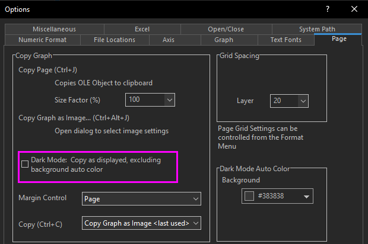
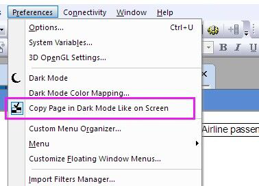

FAQ-1199 Was soll ich tun, wenn ich die Farbe des Dunkelmodus nicht beim Exportieren von Diagrammen beibehalten möchte?
Turn-off-Dark-Mode-for-Export
Letztes Update: 29.08.2024
Wenn Sie im Dunkelmodus sind, bekommen Sie beim Exportieren eines Diagramms standardmäßig das, was Sie sehen. Um die Farben des Dunkelmodus beim Exportieren nicht beizubehalten:
- Wenn im Menü Datei: Grafiken exportieren oder Grafiken exportieren (Erweitert) ausgewählt ist, um ein Diagramm zu exportieren, deaktivieren Sie das Kontrollkästchen Farbe des Dunkelmodus folgen.
Beachten Sie, dass Sie, falls die Hintergrundfarbe im Dialog Details Zeichnung auf Auto gesetzt ist (die Standardeinstellungen), das Kontrollkästchen Transparenter Hintergrund im Dialog Export verwenden können, um zu steuern, ob der exportierte Diagrammhintergrund die weiße Farbe beibehält oder Transparenz verwendet.

Oder:
- Wählen Sie für globale Einstellungen das Menü Einstellungen: Optionen. Deaktivieren Sie auf der Registerkarte Seite das Kontrollkästchen Dunkelmodus: Wie angezeigt kopieren, ausschließlich autom. Hintergrundfarbe. Dies exportiert die Diagramme in den Farben des Hellmodus. Wenn die Hintergrundfarbe im Dialog Details Zeichnung auf Auto gesetzt ist (die Standardeinstellungen), wird es als weißer und nicht als schwarzer Hintergrund exportiert.

Außerdem können Sie, wenn Sie eine Diagrammseite kopieren und dann in die andere Anwendung, z. B. PPT, einfügen, die Auswahl des Menüs Einstellungen: Seite im Dunkelmodus wie auf Bildschirm kopieren aufheben, um das Diagramm wie im Hellmodus zu exportieren.

Schlüsselwörter:Dunkelmodus, Hellmodus, dunkle Farben, Diagramm exportieren, Seite kopieren, dunkle Farben zum Exportieren ausschalten, als Hellmodus exportieren